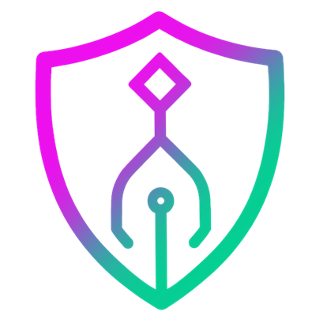

ARCHON
What is Archon?
AI coding is chaotic.
SOLID
Reliable. Repeatable. Structured.
By the numbers
Built for structured AI work.
17
built-in workflows
1
worktree per run
Core workflows
PIV
Plan-Implement-Validate
Guided dev with your review
01
fix
Issue to pull request
GitHub-native, one command
02
RVW
Multi-agent code review
5 agents before merge
03
Get started
ARCHON
archon.diy
Subscribe
→